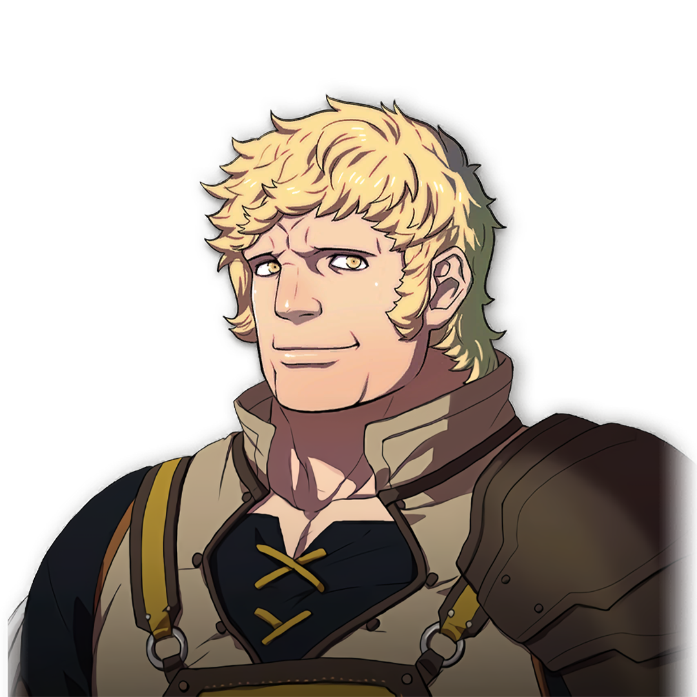

Raphael

Gender: M
Age: 18
Crest: None
Height (cm): 190
Nationality: Leicester Alliance
Birthday: 5/18 - Harpstring Moon
Interests: Bodybuilding, Eating
Likes: Pure protein, muscles, training, his baby sister
Dislikes: Book learning, unfinished meals
Status: Eldest son of House Kirsten, a former merchant family